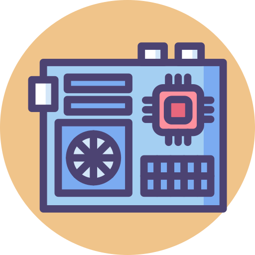

Hi.
I am a web designer currently based in Gjøvik, Norway.
I like computers, technology and I believe that everything might be possible if there is enough passion for it.
I also have different hobbies and interests during my freetime and i also like to listen to music.
Hobbies & interests
Furry
I have really big interests in anthronoprhical animals and I am one what people considers a furry.
Although there is much hate against furries on internet, i am not afraid to let the world know who i am and all the hate against the furry comunnity is also not deserved

PC building
Builing a desktop computer is something i have good experience with.
Assembling a computer with different parts is something that interests me and i love how something i made can be so useful
Piano
I sometimes play piano in my freetime. I just cant describe how it feels to play beautiful music with my own hands and i can already play 6 7different songs without notes